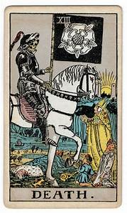
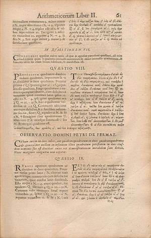

1 Does the U.S. Constitution have a Gödelian Loophole?
Voting Paradoxes, Arrow’s Theorem, and Gödel’s Inconsistency Predicament
“It’s not the voting that’s democracy, it’s the counting.”
—Tom Stoppard, Jumpers (1972)
Recent events have put the fragilities of American democracy on public display. Passing laws restricting voter registration, making it illegal to give water to those waiting for hours to vote, gerrymandering to insulate incumbents from losing elections, pressuring state officials to commit voter fraud, weaponizing the Department of Justice, plotting to military to confiscate voting machines, inciting a violent insurrection to hang the Vice President and to assassinate the Speaker of the House, subverting the peaceful transition of power, and the list of charges goes on.
1.1 Section 1. Gödel’s Citizenship Test
The story of Gödel’s citizenship test as recounted by Oskar Morgenstein is quoted in its entirely in Mario Livio’s Is God a Mathematician?
It was in 1946 that Gödel was to become an American citizen. He asked me to be his witness and as the other witness, he proposed Albert Einstein who also gladly consented. Einstein and I occasionally met and were full of anticipation as to what would happen during this time prior to the naturalization proceedings themselves and even during those proceedings….[1]
(Note: Morgenstern’s recollection was dated September 13, 1971, a quarter of a century after the events had taken place.)
According to Morgenstern, Gödel approached the matter of citizenship in his usual “thorough manner to prepare himself properly.” He began with the “history of the settlement of North America by human beings” then proceeding to American history, and then to the U.S. Constitution ending with the local politics of Princeton wanting to know such particulars as “the borderline … between the borough and the township” and “how the Borough Council was elected … and the function of the Township Council.”
Column quote:
“Poets do not go mad; but chess-players do. Mathematicians go mad, and cashiers; but creative artists very seldom. I am not, as will be seen, in any sense attacking logic: I only say that this danger does lie in logic, not in imagination.”
― G.K. Chesterton, Orthodoxy
In the course of his foundational studies in law, Gödel made a discovery:
He rather excitedly told me that in looking at the Constitution, to his dismay, he had found some inner contradictions and that he could show how in a perfectly legal manner it would be possible for somebody to become a dictator and set up a Fascist regime, never intended by those who drew up the Constitution …[2]
Einstein and Morgenstern, who had more practical issues on their mind. Gödel had been declared eligible to report for garrison duty as an Austrian citizen. They realized that Gödel’s discussing his discovery might raise red flags during his interview. Einstein did his best distract Gödel on their drive from Princeton to Trenton, New Jersey. As they arrived, Einstein teased, “Now, Gödel, are you really well prepared for this examination?”
The examiner, impressed with the presence of someone as prominent as Einstein as a sponsor, and so was inclined to get through the examination without a hitch—that is, until he inadvertently remarked:
Examiner: Now, Mr. Gödel, where do you come from?
Gödel: Where I come from? Austria
Examiner: What kind of government did you have in Austria?
Gödel: Austria was a republic, but the constitution was such that it finally was changed into a dictatorship.
Examiner: Oh! This is very bad. This could not happen in this country.
Gödel: Oh, yes, I can prove it. [3]
What was this loophole that Gödel discovered? No one knows. Yet Gödel’s enigmatic claim, like Fermat’s cryptic note scribbled in the margins of his copy of Diophantus’s Arithmetica, has led Constitutional scholars to speculate about how to derive a dictatorship from Constitutionally valid premises.
Are all democracies doomed to allow for the possibility of a dictatorship? Arrow’s Theorem [1951], which is sometimes compared (superficially) to Gödel’s theorem, provocatively states that any ranked voter system with at least three candidates satisfying two conditions—Unanimity and Independence of Irrelevant Alternatives—not only can but must have a dictator! This chapter presents some voting paradoxes, an elegant proof of Arrow’s theorem (Geanakoplos [2005]), and an intriguing possibility for Gödel’s loophole (Guerra-Pujol [2013]). This proposal suggests a (deeper) comparison of the consistency predicaments posed by Gödel’s Second Incompleteness Theorem and by Article V of the U.S. Constitution, which sets forth a procedure for amending itself.
INSERT
Section 2. A Budget of Voting Paradoxes
Naively, we assume a democratic society automatically results from “majority rule” based on the principle of “one person one vote.” These assumptions about voting are demonstrably false. Recent elections have produced widespread disillusionment with democratic processes, which appear to be “rigged.” Voter alienation can be blamed on many different factors, e.g., the two party system, the electoral college, echo chambers of slanted reporting, disinformation through foreign interference, gerrymandering, voter suppression, Fox News [sic], etc. However, there are also paradoxes hidden within the logic of different methods of vote counting.
According to Majority Rule, the candidate who has more than half of the votes is the winner. Majority Rule is easy to understand it is widely used in most democratic institutions, and it is regarded as the paradigm of fairness. But is it certain that this voting procedure will deliver a fair outcome? Not necessarily.
One thing, however, is certain: it is a myth to think that Majority Rule is how elections actually work in America or other democratic institutions. In practice elections are more complex. As we shall see there are are diversity of methods for counting votes, each with its own rationale. Moreover, these methods can deliver diverse results.
In Majority Rule, should the candidate be required to get more than 50% of all eligible voters or only more than 50% of the votes cast? In the latter case, you have the problem of the lunatic fringe candidate who, for example, wins the election because he has a vigilant base of 30% even though the majority of eligible voters dislike the candidate. In the former case, you get no result if a great many eligible votes don’t bother to vote.
Majority Rule is typically a “winner take all” system, whereas in some countries apportion representations in terms of voter percentages.
Majority Rule is often confused with Plurality Voting (or “First-Past-the-Post” voting), which chooses the candidate with the most votes regardless of whether the 50% threshold is achieved.
Are Majority Rule or Plurality Voting the fairest ways to decide issues? Both of these methods only count a voter’s first choice and ignores her second or third choices. This method can produce unfair outcomes when there are polarizing candidates. To see this let’s change the topic from disappointing politicians to dining preferences.
Suppose five friends v1 – v5 are deciding on four restaurants—A, B, C, D for a party. Here is the voter profile containing the complete voter rankings for all five friends. (For simplicity, we assume the voter rankings are total and don’t allow ties.)
| v1 | v2 | v3 | v4 | v5 | |
|---|---|---|---|---|---|
| 1st choice | A | A | A | D | C |
| 2nd choice | B | B | B | B | B |
| 3rd choice | C | D | D | C | D |
| 4th choice | D | C | C | A | A |
Option A, the Steak Pit, is a polarizing option—it is at the top of the bottom of everyone’s ranking.
(Suppose v1 – v3 are meat-lovers but v4 and v5 are vegetarians.). Options C and D—the Curry Club and Dali Lama’s Delight—are also polarizing since they are at the top of the list for the vegetarians but at the bottom of the list for the meat-lovers.
By Majority Rule and Plurality Voting, option A the Steak Pit is the winner.
Perhaps option B, the Bountiful Buffet, is more fair since it is second on everyone’s ranking. This option is no one’s first choice but it is neither first nor last on anyone’s list.
What counts as “fair” is not simply the result of a mathematical calculation. To determine what counts, or should count, in determining the winner of an election, requires philosophical considerations about what democratic values we wish to reward in our method of counting votes.
Furthermore, for any system of counting votes, there are inevitably ways of voters trying to “game the system”—for example, by not voting for their actual preferences (preference betrayal) in order to tip the election against the “lesser of two evils” (negative partisanship).
A brief survey of some different voting methods, and their associated paradoxes and shortcomings, can be an essential part of what the American philosophy John Dewey 1859 - 1952) called “education for democracy”.
What counts as fair, in a given voting situation, depends not only mathematical methods for recording and counting voter preferences but also on philosophical considerations about what democratic values should be taken into consideration.
Let’s begin with the Condorcet paradox, named after the Marquis de Condorcet (1743 – 1794). This paradox has a simple and elegant structure that has been discovered, and rediscovered, by other mathematicians and logicians, including Lewis Carroll. Suppose there are three candidates A, B, and C, and three voters with the preferences as follows:
| Voter 1 | Voter 2 | Voter 3 | |
|---|---|---|---|
| 1st Preference | A | B | C |
| 2nd Preference | B | C | A |
| 3rd Preference | C | A | B |
In this three-way standoff, no candidate can win a one-on-one election against all of the other candidates. There are rival majority preferences. How should Majority Rule work in this circumstance?
Condorcet Puzzle. Suppose the election is to be decided in a sequence of two runoff elections. Two candidates are chosen for the first runoff, and then the winner faces a second runoff against the remaining candidate. You get to schedule and choose the candidates for the first runoff. Show that you are the “Dictator”—by scheduling the runoffs strategically, you in effect determine final outcome.
Solution: Whichever candidate you wish to ultimately win, you reserve for the second runoff.
The Condorcet paradox allows for a winner who is not the first choice of 2/3 of the population.
Consider second scenario. This time all three candidates will run in a first election and that the candidate with the lowest number of votes will be eliminated.
Suppose there is a Machiavellian voter who alone knows the voter profile and who alone is willing to “betray” his favorite candidate in the first round of voting.
Prove the Machiavellian voter is the dictator—he can tip the election in favor of his candidate by strategically betraying that candidate.
The Marquis de Condorcet, one of the first proto-social scientists and discoverer of this paradox, died under questionable circumstances after being imprisoned by French Revolutionaries.
The Condorcet Paradox is similar to the child’s game of Rock-Paper-Scissors. This set of choices is non-transitive. No matter what your opponent chooses, you can beat your opponent by making the right choice.
Exercise.
Pac-Money Puzzle: There are two competing PACs (Political Actions Committees).
PAC-1 is energetic and is always first to announce three things:
Party— Blue, Red or Green—they are backing;
Amount wagered—in increments of $10K;
Choosing—backing a Winner or Loser.
PAC-2 is less energetic, but more enterprising, and must choose between two remaining slates and match the amount wager to play.
The election information is given by the following chart:
| District 12 | District 34 | District 56 | |
|---|---|---|---|
| Blue | 4 | 9 | 2 |
| Red | 3 | 5 | 7 |
| Green | 8 | 1 | 6 |
There are three parties — Blue, Red or Green
There are three slates (rows) of candidates whose voter rankings are 1, 2, 3, 4, 5, 6, 7, 8, 9.
There are three district elections (columns). A roll of a die determines which district election matters.
If a 1 or 2 is rolled, then only election district 12 matters;
if a 3 or 4 is rolled, then only election district 34 matters;
if a 5 or 6 is rolled, then only election district 56 matters.
The goal is either Choosing a Winner or a Loser in the district election chosen at random.
In the former case, the Pac backing the candidate with the higher ranking wins;
In the latter case, the Pac backing the candidate with the lower ranking wins.
The winner of the PAC with the more after five rounds. Which Pac has the advantage—the first or second?
What’s the best strategy for staying in business for the longest time?
Solution: Notice that the chart is a 3 x 3 magic square. The set of choices—like Rock-Paper-Scissors—forms a non-transitive cycle: Blue > Red > Green > Blue.
INSERT LATER: There is a feature of the Condorcet Voting Paradox that will be relevant to Arrow’s theorem—this voting situation violates the principle of independence of irrelevant alternatives, namely, the choice of a winner can depend on whether a losing candidate is allowed into the race. This assumption was violated in the Presidential election of 2000 between George W. Bush and Al Gore. If Ralph Nader hadn’t run as a third party candidate in Florida, then Gore would have won the Florida’s electoral college vote and so would have won the national election.
Suppose Florida had 100 voters, who preferences are indicated by the chart on the left. In this scenario, the Democratic candidate Gore wins with 51 votes. However, if just 4 voters switch their preferences to the one that makes Nader their first choice as in the chart on the right, this swings the election to Bush.
| P | 48 | 51 | 1 |
|---|---|---|---|
| 1st | Bush | Gore | Nader |
| 2nd | Gore | Bush | Gore |
| 3rd | Nader | Nader | Bush |
| P’ | 48 | 47 | 5 |
|---|---|---|---|
| 1st | Bush | Gore | Nader |
| 2nd | Gore | Bush | Gore |
| 3rd | Nader | Nader | Bush |
Even though the relative rankings of Gore and Bush remained unchanged for every voter, the possibility of voting for third candidate flipped the election in favor of a candidate least favored by most of the voters. The presence of Ralph Nader as a third party candidate who wasn’t going to win disadvantaged Gore, the candidate who appealed to voters with the more similar preferences than those who voted for Bush. In general, third party candidates hurt the candidate who appeals to voters with more similar preferences.
1.2 Section 3. Other Methods to the Madness of Voting Counting
Let’s compare three methods of counting votes for the same voting profile.
Plurality Elimination
Instant Runoff
Borda Count
Suppose there three candidates A, B, C for a position in a Philosophy Department. To make it memorable, let’s say that C is a Continental candidawith a magic trick, which we call “Love or Death?”. This card trick invented by Jim Steinmeyer, the magician who created the Disappearing Statue of Liberty for David Copperfield.

|

|
 |
|---|
Love or Death? For this magic trick, you’ll need a deck of cards.
(If you don’t have playing cards, you can draw your own pictures for Tarot cards on 9 index cards.)
Deal 7 cards at random from a shuffled deck. Look through those 7 cards and place your chosen card at the top of the deck. This is the card you’re going to remember.
Choose 2 more cards at random and place them on top of the deck of 7 cards.
Peak at the card currently on the top of the deck. Suppose it’s the Jack of Diamonds.
Take the deck in your left hand and spell out the cards in front of your as follows. As you spell out J-A-C-K deal a card for each letter from the top of the deck into a new pile. Drop the cards remaining in your hand on top of pile. Do the same for O-F, and then for D-I-A-M-O-N-D-S.
(If you’ve drawn your own deck of Tarot cards, instead of using some random playing card such as the “Jack of Diamonds” try choosing some random email address such as F-O-R-T-U-N-E (T-A-R-O-T-dot-com?)!)
Now you are to make a final choice: LOVE or DEATH?
If you choose the former, spell out L-O-V-E and drop the remaining cards on top of the pile.
If you choose the latter spell out D-E-A-T-H, but this time place the remaining deck on the bottom.
Do you remember your chosen card? Turn over the top card on the pile!
The trick is magical because the algorithm gives the appearance of being random—after all the cards you initially dealt out were random, the card chosen for spelling out the cards was also chosen at random, and finally, you had a “free choice” of love or death.
Puzzle: In fact, the card trick is self-working. Prove that the first four steps of the algorithm move the secretly chosen card to the fixed-point of the spelling operations!
With this magic trick in mind, A is an analytic candidate, and B is a candidate specializing in the history of philosophy. Let’s say there are 29 voters.
| C | C | A | A | B | B |
| B | A | B | B | C | A |
| A | B | C | C | A | C |
| 12 | 1 | 12 | 1 | 2 | 1 |
- Plurality Voting
This method ignores all the preference except the first choices. To win a candidate needs to obtain a majority of 15 to win. The candidate with the least votes is eliminated after the first round of voting.
Round 1:
C receives 12 votes
A receives 11 votes
B receives 6 votes
No candidate has a simple majority, so B, the candidate with the lowest number of votes, is eliminated and there’s a second round of voting.
Round 2:
C receives 14 votes
A receives 15 votes
Result: Candidate A wins.
- Instant Run-Off
The Plurality Method only takes into consideration first choices, but it may be important to consider the “order of preference” rankings. The Instant Run-Off Method attempts to remedy this defect. As before the First choice votes result in a tie:
C receives 13
A receives 13
B receives 3
Since no candidate has a majority, this is where the “Instant Run-off” kicks in. Candidate B at the bottom is eliminated but those who voted for B are not disenfranchised because their second-choice votes are now counted. Since 2 out of 3 of these voters prefer C to A, Candidate C wins.
- Borda Count
This method is named after French mathematician Jean-Charles de Borda (1733 - 1799) and attempts to take into account voter’s preferences by giving weights to choices—2 points for first choices, 1 point for second choice, and none for 3rd choices:
First choice votes:
C receives 13
A receives 13
B receives 3
Second choice votes:
C receives 3
A receives 2
B receives 24
So the Borda Count is calculated as follows:
A (13 × 2) + 2 = 28
C (13 × 2) + 3 = 29
B (3 × 2) + 24 = 30
So the end result of the Borda Count is that Candidate B wins. There are other methods of counting votes, but we have surveyed enough methods to draw some conclusion.
Voting systems, like all human measurements, are fallible and susceptible to “being gamed.” For example, the voting systems assume sincere voting, that voters are expressing their true preference and not merely voting strategically to “game the system”—by betraying their preferred candidate and settling for negative partisan voting. In the above scenario, voters who really prefer candidate B can tell themselves, “I’m not going to get my candidate anyway, so I’ll change my first choice to break the tie and decide the election against the candidate I dislike the most”—the “lesser of two evils”—or worse, I’ll sell my vote to whichever side is willing to give me the better post-election perks.” So choosing a voting system is not merely a multiple choice among equal alternatives; it can be the creative decision about what we want to count, a free choice that expresses what we value.
Exercise.
Majority Rule
Plurality
Instant Runoff
Borda Count
| Ace | King | Queen | Jack | 10 | 10 |
|---|---|---|---|---|---|
| Jack | 10 | King | Queen | King | Queen |
| 10 | Jack | 10 | 10 | Jack | Jack |
| Queen | Queen | Jack | King | Queen | King |
| King | Ace | Ace | Ace | Ace | Ace |
| Simple Majority | None |
|---|---|
| Plurality/First Past | Ace |
| Run-Off | King |
| Alternative | Queen |
| Points (Borda) | Jack |
| Condorcet | 10 |
1.3 Section 4. An Elegant Proof of Arrow’s Theorem
Now we are ready to state and prove one of the most intriguing of all voter paradoxes—which can be provocatively called Arrow’s Theorem about the Impossibility of Democracy—or simply, Arrow’s Impossibility Theorem [1951]. The result is due to Kenneth Arrow (1921 – 2017), who was the joint winner of the Nobel Memorial Prize in Economic Sciences in 1972, largely because of this intriguing theorem. The elegant proof give here is based on John Geanakopolos’s “Three Brief Proofs of Arrow’s Impossibility Theorem” [2005].
Let {A, B, … , C} be a set of at least three candidates.
Let {x1, x2, …, xN} be a set of N voters each of whom have their own ranking of the candidates A, B, …, C .
For simplicity, we shall assume all rankings are transitive strict orderings instead of allowing for ties.)
A voting profile P is the N-tuple of all the individual voter rankings.
A constitution (or voting system) is some function from the voting profile to outcome of the vote, i.e., society’s ranking of the candidates (called the social preference ranking).
A constitution respects unanimity if whenever every voter places candidate A above candidate B, society places A above B.
A constitution respects the Independence of Irrelevant Alternatives (IIA) if the social preference ranking of any two alternatives A and B depends only on their relative ranking by every individual voter. In other words, if two voting profiles P and P’ agree for each voter on the relative ranking of any pair of candidates A and B, then the constitution for the two voting profiles produces the same relative social ranking for candidates A and B.
Arrow’s Theorem: Any constitution for an election with at least three candidates that respects unanimity and the Independence of Irrelevant Alternatives must be a dictatorship!
What is a dictatorship? A constitution is a dictatorship if there is a voter whose vote determines the outcome of the social preference ranking. In other words, there is a voter n* such that for every pair of candidates A and B, if n* prefers A to B, then society prefers A to B.
Let’s introduce some mathematical notions that make it easier to see that the existence of a “Dictator” is a mathematical fixed-point theorem. The conditions for Arrow’s Theorem require that any function on the voting profile produces a fixed-point voter, which is, retrospectively, given the somewhat misleading, and politically charged, label of dictator.
Let [C] be the array [A, B, …, C] of at least three candidates.
Let [N] be the array of [1, 2, …., n] voters.
Let θn be an array of candidates which is the preference ranking for voter n.
A voting profile θN is an array [θ1, θ2, …, θn] of all the voter preferences.
A voting system is a function f: θN → θ from the voting profile to a preference ranking:
Now let’s formalized the two conditions for Arrow’s theorem
Unanimity ∀i θi: x > y) → f(θ): x > y
∀xi (A > xi B) → (A > S B), here the social ranking S = f
IIA ∀i [θi: x > y) ↔︎ τi: x > y) → [f(θi): x > y ↔︎ f(τi): x > y]
∀xi (A P > xi B ↔︎ A P´ > xi B) → (A P >S B ↔︎ A P´ >S B)
Then the existence of a dictator is simply: ∀θN∃k f(θN) = θk
This logical representation is useful. One reason for finding Arrow’s Theorem to be counter-intuitive is confusing the order of the quantifiers. Arrow’s Theorem states that for voting systems with at least three candidates meeting the two conditions, there will exist some fixed-point voter. It does not prove the existence of the some particular voter who will be the dictator over any voting profiles.
The example of how Nader’s third party candidacy threw the election to Bush, is a violation of IIA.
| P | 48 | 51 | 1 |
|---|---|---|---|
| 1st | Bush | Gore | Nader |
| 2nd | Gore | Bush | Gore |
| 3rd | Nader | Nader | Bush |
| P’ | 48 | 47 | 5 |
|---|---|---|---|
| 1st | Bush | Gore | Nader |
| 2nd | Gore | Bush | Gore |
| 3rd | Nader | Nader | Bush |
Gore wins Bush wins
∀xi (Gore P > xi Bush ↔︎ Gore P´ > xi Bush)
but
(Gore P >S Bush) ∧ ~ (Gore P’ >S Bush)
Even though the relative rankings of Gore and Bush remained unchanged for every voter, the movement of a third and independence candidate up in the rankings affects the outcome of the relative ranking between Gore and Bush.
PROOF:
Let’s model these definitions and properties of voting systems with two decks of cards (one with blue and the other with red backs) to get a feel for the properties. For candidates A, B and C, let’s choose the Ace, King, and Queen (where the suits don’t matter). With the two decks, you have 8 such triples.
Next let’s construct a voter profile by dealing out the remaining blue backed cards face down in a grid 7 columns wide by 5 rows deep. In this grid, the columns correspond to voters 1, 2, …, 7. The top card in each column represents the voters 1st choice and the card 5th in the row of that column represents their last choice.
Deal out one additional column of red backed cards to the right of the grid to represent the results of applying the constitution or voting system to the voting profile represented by the grid.
Now we’re ready to get manipulate the cards to get a feel for the properties of unanimity and the Independence of Irrelevant Alternatives (IIA).
Take your 7 sets of triples—consisting of Ace, King, Queen–on top of the three cards in each of the 7 columns. This arbitrary dealing represents 3 of 5 of the rankings for each of the 7 voters (we don’t care about the other two rankings). The grid represents a partial voter profile. We could complete the profile by arbitrarily taking 2’s and 3’s the completing each individual voter’s ranking of the 5 candidates Ace, King, Queen, 2, 3.
Next let’s talk more about the properties of voting systems mentioned above Unanimity and IIA.
Describe what these two properties require in terms of manipulating the cards.
Unanimity says, for example, that if King > Queen for all voters, then society rates King > Queen.
In terms of the cards, this means that if in each column the King is above the Queen, then the King will be above the Queen in the social ranking.
What does IIA say? Let’s say we’re interested in the pairing of King and Queen with a voter profile of P. Then IIA says it we create another profile P’ with the same relative rankings of the King and Queen, then the constitution will give the same ranking to the King and Queen for both profiles.
What this means in terms of cards, is that given P, we can shift the Ace up or down in each individual voter’s rankings without changing society’s overall ranking of the King and Queen. This turns out to be quite a strong condition. Does IIA hold for the voting methods discussed above?
Answer: NO
Let’s take an actual example—the 2000 election between Democratic candidate Al Gore, the Republican Candidate George W. Bush, and the third party candidate Ralph Nader. In the State of Florida, Nader turned out to be a “spoiler”. Gore would have won if Nader hadn’t run. Nader drew away some voters from Gore with the result that Gore lost to Bush.
Let’s examine a specific example. Suppose Florida has 100 voters, who preferences are indicated on the left hand chart below. In this scenario, the Democratic candidate Gore wins with 51 votes. However, if just 4 voters switch their preferences to the one that makes Nader their first choice (chart right), this swings the election so that Bush wins.
This example violates the IIA.
| P | 48 | 51 | 1 |
|---|---|---|---|
| 1st | Bush | Gore | Nader |
| 2nd | Gore | Bush | Gore |
| 3rd | Nader | Nader | Bush |
| P’ | 48 | 47 | 5 |
|---|---|---|---|
| 1st | Bush | Gore | Nader |
| 2nd | Gore | Bush | Gore |
| 3rd | Nader | Nader | Bush |
Gore wins Bush wins
∀xi (Gore P > xi Bush ↔︎ Gore P´ > xi Bush)
but
(Gore P >S Bush) ∧ ~ (Gore P’ >S Bush)
Even though the relative rankings of Gore and Bush remained unchanged for every voter, the movement of a third and independence candidate up in the rankings affects the outcome of the relative ranking between Gore and Bush.
This is the logic of the situation and the rest, as it is often said, is history. How can a third party candidate, who doesn’t have a chance of winning, end up tipping the election in favor of the candidate he is most unlike? Notice that when small number of voters were bled off from the Gore camp, this hurt Gore more than Bush. A third party candidate often hurts the candidate to whom they are most similar. Losing the Florida election meant that Gore lost the electoral college and hence the election to Bush. The fate of the nation changed at that crucial moment of American history.
Now let’s turn the proof of Arrow’s Theorem. What does the theorem say? Let’s review the properties of voting systems discussed above and after we state Arrow’s Theorem, we’ll add a third:
(1) unanimity means that if a candidate A is universally preferred by each voter over candidate B, then the voting procedure ranks A above B;
(2) Independence of Irrelevant Alternatives means that the voting procedure’s relative ranking of candidates A and B should depend only on each individual voter’s relative ranking of A and B and is independent of that voter’s ranking of some other candidate C.
Let’s illustrate the idea of the Independence of Irrelevant Alternatives with getting your just dessert. You have a choice of three desserts:
Apricot Tart
Crème Brulee Cheesecake
Tiramasu
Suppose your date chooses the Crème Boulee. The waitress says, “That’s fortunate because I forgot that we’re out of the Tiramasu anyway.
“Well, in that case,” your date replies, “I’ll take the Apricot Tart”.
This might seem a little strange to you. If your date’s first choice was Crème Boulet, why should the lack of an irrelevant alternative make your date change his/her mind?
We’ll come back to IIA, which turns out to be a strong requirement.
What does Arrow’s Theorem say?
Arrow’s Theorem: Any constitution for an election with at least three candidates that respects unanimity and the Independence of Irrelevant Alternatives must be a dictatorship!
What is a dictatorship? This means that there is a voter whose choices, independently of anyone else’s, determined the outcome of the election.
A constitution is a dictatorship if there is a voter whose vote determines the outcome of the social preference ranking
In other words, there is a voter n* such that for every pair of candidates A and B, if n* prefers A to B, then society prefers A to B. Formally, A >n* B, then A > S B.
Now we are ready to give a brief and elegant proof of Arrow’s Theorem. This proof proceeds in three stages.
Stage 1. If there exists a polarizing candidate B, then there is a vote profile with an extremely pivotal voter n*(B), i.e., a voter who can by unilaterally changing his vote move candidate B from the bottom of the social ranking to the top.
Stage 2. This extremely pivotal voter n*(B) is a pair-wise dictator for all candidates A and C distinct from B, i.e., A >n* C → A >S C.
Stage 3. The pair-wise dictator n*(B) for A and C must also be a dictator (i.e., also be a pair-wise dictator for any candidates A and B).
First, we prove a useful lemma.
Lemma. If candidate B is a polarizing candidate (i.e., B is placed first or last in the ranking of every voter), then society places B first or last, assuming the constitution respect unanimity and IIA.
Proof (by contradiction).
If B does not occupy first or last place in society’s social ranking, then B is sandwiched between two other candidates A >S B >S C, where B is also assumed to be a polarizing candidate which means that each voter ranks B either first or last.
INSERT PICTURE
Construct a new voter profile P’ that is like the original voter profile P, except for switching the positions of A and C for those voters who had originally ranked C above A. Notice that the relative rankings of B with respect to A, and of B with respect to C, remain unchanged because candidate B is at the top or bottom of every voter’s ranking. If B were at the top of xi’s ranking, then B >xi A and B > xi C, and if B were at the bottom of xi’s ranking, then the inequalities would be reversed. The point is that P and P’ agree on all the relative rankings between A and B and between B and C.
Hence, by IIA, the constitution must give the same social preference ranking for both profiles. Thus, it is still the case that A >S B >S C, so by transitivity A >s C. However, our construction implies by unanimity that C >s A, contradiction.
Let’s construct the proof more formally.
Proof:
ShowB is polarizing → society ranks B first or last 10, 12 IDB is polarizing but A P> S B P> S C Assume (ID)
Let P’ switch C above A for every voter Construction
∀xi (C P’>xi A) → C P’>S A) Unanimity
∀xi (C P’>xi A) 3, by construction
B is polarizing, i.e. first or last for each vote 2, S
∀xi (A P > xi B ↔︎ A P´ > xi B) 6, Key Idea (see above)
∀xi (C P > xi B ↔︎ C P´ > xi B)
- ∀xi (A P > xi B ↔︎ A P´ > xi B) → (A P >S B ↔︎ A P´ >S B) IIA
∀xi (C P > xi B ↔︎ C P´ > xi B) → (C P >S B ↔︎ C P´ >S B)
A > S B > S C 7, 8 MP, 2, BC, MP, ADJ
A > S C 9, Transitivity <
C > S A 4, 5 MP
~(A > S C) 11, Asymmetry <
The construction of a more formal proof is logically a worthwhile exercise. The assumption that there are at least three candidates is required for line 2. The key idea of the proof occurs in line 7, which was explained above. The fact that the new profile P’ that ranks C above A must give the same social preference ranking as the original profile on the basis of IIA is spelled out in lines 7 - 9. The assumption that >S is a transitive strict ordering is required for lines 10 and 12, which give the explicit contradiction. These details are assumed in many of the proofs given informally.
With this lemma, let’s proceed the first stage of the proof of Arrow’s Theorem.
Stage 1. There exists a voter n* = n(B) who is an extremely pivotal voter, i.e., who can by unilaterally changing his vote move candidate B from the bottom of the social preference ranking to the top.
Proof: There is an existence proof. Let’s assume we begin with a profile in which every voter has an arbitrary ranking except that B is at the bottom of every voter’s ranking. By unanimity, society also ranks B last. Beginning with voter 1 through voter N, successively move B from the bottom of the voter’s ranking to the top. Let n* be the first voter who causes the social preference ranking to change from placing B at the bottom to placing B at the top. (By unanimity, this must happen at the latest when n* = N and so there must be a first). Let Profile I be the preference profile just before this change and Profile II be the preference profile just after this change.
Stage 2. This extremely pivotal voter n*(B) is a pair-wise dictator for all candidates A and C distinct from B, i.e., A >n* C → A >S C.
Proof: Choose one of the pair A and C, say A, and from profile II construct Profile III as follows:
Let n* move A above B, so that A >n* B > n* C.
Let all other voters arbitrarily rearrange their rankings of A and C, while leaving B is its position as first or last.
By IIA, Profile III places A > B (since Profile I places B is at the bottom for each voter and so Profiles I and III agree on the relative rankings of A and B for every voter, whenever n* places B at the bottom).
By IIA, Profile III places B > C (since Profile II places B is at the top for each voter and so Profiles II and III agree on the relative rankings of B and C for every voter, whenever n* places B at the top).
Hence, by transitivity, A > C. Therefore, the social preference ranking with respect to A and C must agree with n* whenever A >n* C
Formally, ∀xi (A P > xi B ↔︎ A P´ > xi B) → (A P >S B ↔︎ A P´ >S B)
Stage 3. The pair-wise dictator n* for A and C must also be a dictator.
Proof: We show that the pair-wise dictator n* for any pair of candidates A and C other than B must also be a dictator for any pair of candidates that includes B.
Choose any candidate other than C and put that candidate at the bottom of the preference rankings as in our previous construction. There must be a voter n(C) who is an pair-wise dictator for any pair A and B not involving C. But voter n* dictates society’s ranking of A and B, including at Profiles I and II, and so the n(C) dictator must be the same as the n* dictator.
This completes the proof of Arrow’s Theorem.
Majority Rule tends to rule out Third Party candidates.
Encourage favorite betrayal—ranking one’s one favorite candidate lower in order to tip the elections against the greater of two evils.
This can be corrcted by replacing ranked with range voting similar to ranking systems in Netflicks or Google (Joy of X)
Benefits: in range voting, favorite betrayal does’t hasppen: it is never rational to rank your own candidate lower because there is no advantage in doing so.
Arrow’s Theorem doesn’t apply to range voting.
Range voting gives Third Parties a greater chancing of winning.
However, it can also lead to the election of the lunatic candidate.
Suppose a large number of voters are alienated and think their vote really doesn’t matter.
In such a case a lunatic fringe candidate with a hard minority base can be elected even though the candidate is disliked by a large majority of voter.
One way to try to rule this kind of scenario out is by requiring any winning candidate to obtain a non-zero ranking from at least 40% of the voters.
the candidate a non-zero ranking in order to be even eligible to win.
Majority Rule discriminates against Third Party candidates.
Majority Rule encourages favor betrayal voting, there is no advantage to do this under range voting.
Majority Rule respects the Condorcet condition, whereas Ranging voting need not.
The Condorcet Condition is that the person who would win a two-candidate election against each of the other candidates in a plurality vote is the winner.
Range voting is a system in which the voter gives all candidates a score on a predetermined scale (e.g. from 0 to 9). The winner of the election is the candidate with the highest total score.
Range voting doesn’t satisfy the Condorcet criterion. Consider an election with three voters and three candidates with the following range votes:
Candidate Voter 1 Voter 2 Voter 3
A 5 5 1 11
B 4 4 4 12
C 0 0 0
Here A is the Condorcet winner, but B is the range vote winner.
1.4 Section 5. A Gödelian Loophole in the Constitution Allowing Dictatorship?
“You know, Gödel has really gone completely crazy. He voted for Eisenhower.”
—Einstein
Of course Gödel had in mind a dictatorship of another sort—one that could come about from a series of legal Constitutional Amendments which would result in an actual dictatorship.
Throughout his life Kurt has a complex relationship to citizenship. Kurt was born in Brünn, Moravia when it was part of the Austro-Hungarian empire. After World War I, Moravia became part of the First Czech Republic. Kurt, who was only 12 years old, never learned Czech and was raised to think of himself as an Austrian in exile. While attending the University of Vienna, Gödel was released from his Czechoslovakian citizenship (Feb. 26, 1929), Gödel became a citizen of Austria (June 6, 1929).
While attending the Vienna Circle, Oswald Veblen, who was visiting, heard Gödel speak and invited to be a visiting member of the IAS during its first year of operation. Gödel missed the opening 2nd by four days because of a delay due to illness and returned to Vienna in July. After the unexpected death of Hans Hahn from cancer (July 24 1934), Gödel admitted himself to a sanitorium in Prukerdorf bei Wien for treatment of nervous depression.
After voyaging again to America in September 1935 to join the IAS, Gödel suddenly resigned a month later and returned to Vienna. In 1936, Gödel spent more time in sanatoria. Morris Schlick was murdered on the steps of the University on June 22, 1936. Schlick’s murderer a cause célèbre around which crystallized the growing nationalist and anti-Jewish sentiments in the city, culminating in the Anscluss or annexation of Austria by Hitler was on March 23, 1938. On September 20 1938 Kurt and Adele were married. One month later, Kurt left for America alone to teach at Notre Dame by his friend Karl Menger, who had started the Menger mathematics colloquium.
As an Austrian Kurt automatically became a citizen of Germany after the Anschluss of 1938. The Nazi’s abolished the position of Privatdozent at the University of Vienna 1939 and Gödel was required to reapply to be a Dozent neuer Ordnung. Despite his time in sanatoria (a fact which he probably had to hide unless he were to suffer the fate of others declared mentally unfit) the Nazi authorities classified Gödel as “fit for garrison duty”, a fact which Gödel mentioned in his quest to obtain a U S. non-quota immigrant visa. When Kurt was attacked by Hitler youth, Adele fought off with her umbrella. It was time to leave Vienna.
The perilous trek of Kurt and Adele to the U.S. began in 1939, with a quick departure from Vienna, so Kurt could lecture at Göttingen. While in Germany Kurt and Adele frantically worked to obtain exit permits and transit visas from the German government (December 19, 1939) and a U.S. non-quota immigrant visa (January 8, 1940). A voyage across the Pacific was too dangerous, so Kurt and Adele obtained a Russian visa (January 12) to take a trans-Siberian railway to Yokohama, Japan, where they purchased tickets on the U.S. President Cleveland to sail to San Francisco. From there they took the Transcontinental railroad and arrived in Princeton, New Jersey, where Kurt became an ordinary member of the IAS. Although would Adele return to Vienna after World War II several times, Kurt never did. It is significant that in August 1966 he refused honorary membership in the Austrian Academy of Science.
Given this series of bureaucratic nightmares, it is not surprising that Gödel would take a special interest in whether a democratic society would become a dictatorship. Kurt and Adele became U. S. citizens on April 2, 1945. The quotation from Einstein is about the first election 1952 between Eisenhower and Adlai Stevenson. During the 1950s Gödel became more attentive to American politics which may have exacerbated his paranoia. In 1953 Gödel was dismayed by the McCarthy hearings during which time his friends Einstein and Robert Oppenheimer, director of the IAS, were under surveillance by the FBI.
Clearly Gödel’s complex, and at times harrowing, relationship to his citizenship status may have disposed him to be more discerning, and legalistic, about such matters than is suggested by Morgenstern’s charming anecdote.
The Gödelian Loophole was Article V, the Amendment clause.
Either Article V applies to the entire Constitution, including itself, or to the Constitution excluding the Article V. Article V thus asserts its own unamendability.
A5 (A5 ~D)
In 1950 Leon Henkin had posed the question whether the sentence “I am provable” is provable. Martin Löb answered this question in the affirmative in 1954, using what is essentially the Curry Paradox. Barwise began calling the Curry’s Paradox, “Löb’s theorem” because they have the same propositional structure.
The paradox turns on the fact that the following biconditional:
θ ↔︎ (θ → ) ,
Together with the (T) axiom
j j ,
logical implies an arbitrary proposition . This paradox uses the principle of the transitivity (T4, KM2) and Frege’s principle of concentration of antecedents (T9 KM2 the law of absorption):
T9 (P → [P → Q]) → (P → Q) .
\
Showθ 8, DDθ ↔︎ (θ → χ) Fixed-point theorem
θ → θ (T) Axiom
θ → (θ → χ) 2, BC
(θ → χ) → θ 2, BC
θ → (θ → χ) 3, T4
θ → χ T9, 6, MP
θ 5, 7 MP
The logical lesson to be drawn from the Curry Paradox is that there are negationless versions of the semantic paradoxes. Hence, any attempt to “solve” the paradoxes by focusing on negation (e.g., distinguishing internal and external negation—distinguishing “it is not the case that the boxed sentence is true” from “the boxed sentences is not true”) are bound to fail!
Smullyan in Forever Undecided and “Logicians Who Reason About Themselves” relates Löb’s theorem to self-fullfilling beliefs.
Examiner: Now, Mr. Gödel, where do you come from?
Gödel: Where I come from? Austria.
Examiner: What kind of government did you have in Austria?
Gödel: It was a republic, but the constitution was such that is finally was changed into a dictatorship.
Examiner: Oh! This is very bad. This could not happen in this country.
Gödel: Oh, yes, I can prove it.
Any candidate who is a polarizing candidate for every voter must be ranked first or last by the voting method with the two properties.
A dictatorship is the only
Einstein: Now, Gödel, this was your one but last examination.
Gödel: Goodness, is there still another one to come?
Einstein: Gödel, the next examination is when you step into your grave.
Gödel: But Einstein, I don’t step into my grave.
[1] Livio [2009] quotes the entire memoir written by Morgenstern, Is God a Mathematician? pp. 198-201.
[2] Livio [2009], 199.
[3] Livio [2009], 200.